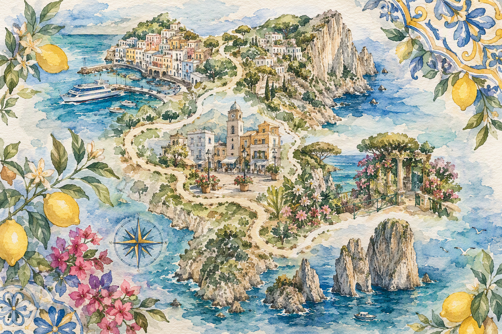
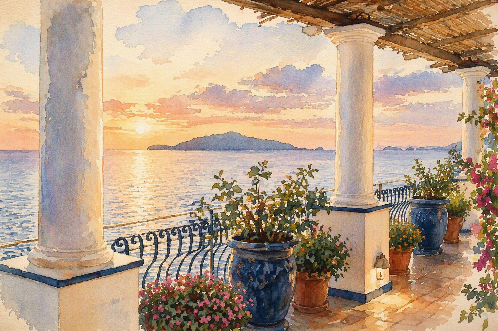
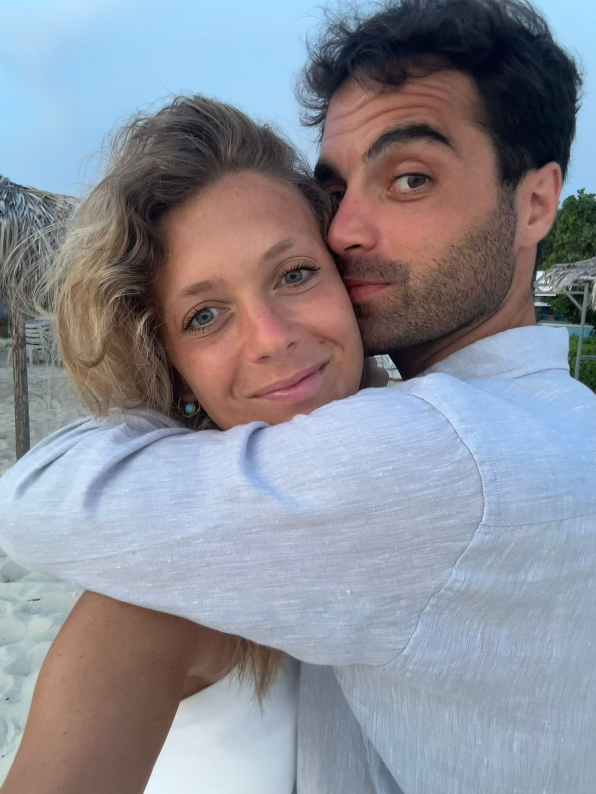
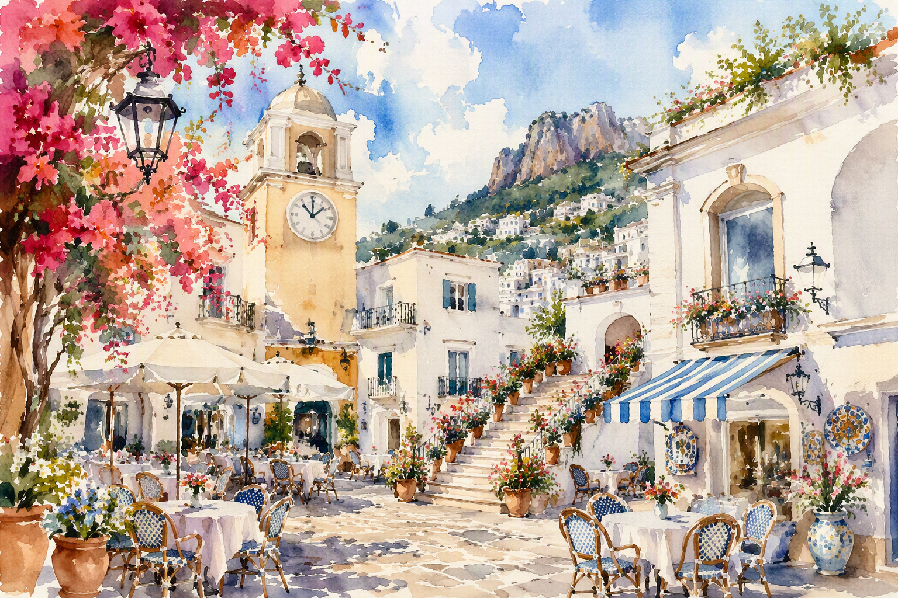
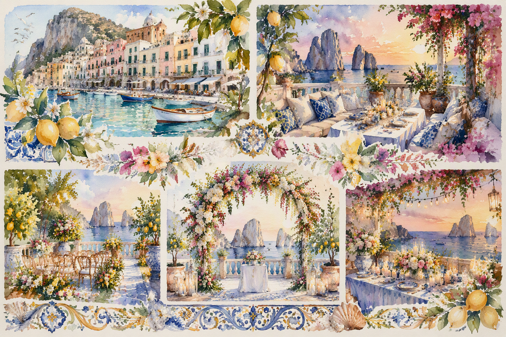

01
La mappa del weekend
Un percorso visivo tra porto, piazzetta, giardini panoramici e terrazze sul mare.

Provaprovaprova


Un percorso visivo tra porto, piazzetta, giardini panoramici e terrazze sul mare.

Un punto d'incontro informale per iniziare il weekend con calma e stile.
Maioliche, limoni e blu mediterranei diventano il linguaggio grafico del sito.

Traghetti, aliscafi e transfer consigliati.
Hotel e strutture selezionate sull'isola.
Dress code leggero, elegante, mediterraneo.
Una sezione pensata per raccogliere conferme, preferenze alimentari e note degli ospiti.